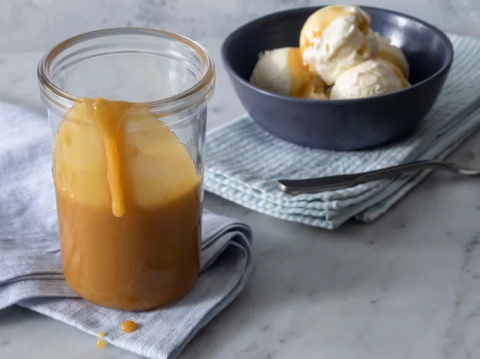

Caramel Sauce Recipe

This caramel sauce recipe is super easy to make with just 3 ingredients.
It's perfect for drizzling on top of ice cream, apple pie, cheesecake, and
anything else you want to put it on!
Want to take an ordinary dessert into a whole new realm of flavor and
texture? Drizzle a spoonful of rich and creamy caramel sauce over the top
and get ready to swoon. This sweet, silky caramel sauce recipe can be used
in all types of desserts — spoon it over ice cream or use it as a dipping
sauce for fruit. Any way you pour it, this easy, 3-ingredient caramel
sauce is sure to be a hit.
Ingredients
- 1 cup packed brown sugar
- ½ cup unsalted butter
- ¼ cup milk
- 1 teaspoon vanilla extract (Optional)
Steps
- Gather all ingredients.
-
Combine brown sugar, butter, and milk in a saucepan over medium heat;
bring to a boil. Cook until thickened, 1 to 2 minutes.
- Remove from the heat and stir in vanilla extract.
- Serve over ice cream and enjoy!